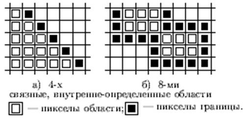

По способам доступа к
соседним пикселам области делятся на следующие два типа:
Область Граница Алгоритм заливки
1. 4-х связная 8-ми
связная 4-х и 8-ми связный
2. 8-ми связная 4-х
связная 8-ми связный

Измерение расстояний.
Измерение расстояний
между объектами важно не только для дальнейшего анализа отношений между ними,
но и как непосредственная оценка движения к ним, от них и вокруг них.
Расстояние может измеряться довольно просто - как физическое, расстояние между
двумя точками. Но кроме того, измерение расстояния может учитывать стоимость
продвижения по пересеченной местности или по дорожной сети в противоположность
движения напрямую, или в обход барьеров, которые препятствуют движению. Эти
меры называются функциональными расстояниями .
Нашу способность
двигаться по прямой часто ограничивают препятствия или сложная местность.
Например, мы можем быть ограничены либо использованием сетей, таких как авто- и
железные дороги, либо потому, что местность слишком пересеченная, образуя
фрикционную поверхность, либо из-за ограждений, окружающих промежуточное
пространство, которые действуют как барьеры на нашем пути*. Фрикционные
поверхности — это области, которые замедляют наше продвижение, увеличивая время
достижения заданной точки по сравнению с поверхностью без сопротивления .
Барьеры бывают двух типов : абсолютные, движение через которые невозможно
(скалы, огражденная территория, озеро и т.д.), и условные, которые идентичны
фрикционным поверхностям, но занимают лишь небольшие участки покрытия.
Примерами условных барьеров могут быть холмистая местность, мелкие реки,
преодолимые внедорожными машинами, или участки леса, которые тормозят, но не
останавливают полностью движение стада животных.
Абсолютные барьеры
останавливают или отклоняют движение, в то время как относительные барьеры и фрикционные поверхности
налагают некоторую стоимость на передвижение, замедляя его или требуя большего
расхода энергии.
При движении по
изотропной поверхности без барьеров, ГИС просто добавляет одну ячейку растра на
единицу пути, и результирующая поверхность функциональных расстояний будет
подобна (с разницей лишь в абсолютных значениях) поверхности простых
геометрических расстояний. При этом не важно, насколько большое или малое
значение импеданса (impedance), или сопротивления, приходится на единицу пути.
Представьте себе движение
по растру слева направо вдоль строки пикселов. Допустим также, что мы хотим
разместить условный барьер от верха до низа карты перпендикулярно этому
направлению движения. Мы можем сделать это, приписав пикселям, выстроенным в
вертикальную линию, значение импеданса, равное не единице, а, скажем, пяти.
Тогда, двигаясь слева направо, до барьера мы испытываем сопротивление в одну
единицу на каждую проходимую ячейку растра. Подойдя же к барьеру, мы должны
приложить в пять раз больше усилий (выражаемых количеством бензина, времени,
или потерей скорости движения) на преодоление только одной ячейки,
принадлежащей барьеру, чтобы попасть за него. То есть, если до барьера график
затрат выглядел бы как наклонная прямая линия, то в месте барьера на этом графике
появится вертикальный скачок. Такой барьер называется относительным (или
условным), так как он может быть преодолен при приложении дополнительных
усилий.
ПРОЦЕСС ВВОДА ДАННЫХ В ГИС
Разнообразие источников
данных для ГИС-проекта определяет длинный список процедур ГИС, помогающих
организовать корректный и аккуратный их ввод: конвертация; трансформация
проекции; геопривязка; преобразование вектор-растр; векторизация; ввод
атрибутов; проверка; построение топологии; сшивка листов карт; генерализация.
Трансформация проекции необходима для импорта
данных, хранящихся в проекции, отличной от той, что принята в проекте. Такая
потребность часто возникает при конвертации данных из других ГИС или
заимствовании их из других проектов. Программные средства ГИС содержат
различные блоки преобразования проекций.
Геопривязка растра – перевод сканированного изображения
карты в систему координат реального мира. Как правило, оцифрованные с бумажной
карты данные хранятся в плоских координатах ее листа. То же относится к
аэрофотоснимкам и другим растровым файлам. Их необходимо привязать к
координатам реального мира для того, чтобы корректно сопоставлять с другими
слоями и использовать при анализе. Также, геопривязка необходима, если для
имеющихся данных нет информации о параметрах проекции. Обычно применяют способ
привязки по нескольким опорным точкам, координаты которых известны (тикам). При
привязке тики занимают свое место согласно координатам, а между ними растр
равномерно искажается.
Трансформация проекций
требует знания о параметрах исходной проекции. Если эти данные неточны,
корректная трансформация невозможна. При привязке по опорным точкам неважно, в
каком
виде находились данные до
обработки. Результат в любом случае будет удовлетворительным.
Геопривязка и
трансформация проекций применимы как к растровым, так и к векторным данным.
Если недоступны готовые векторизованные слои, мы можем отстроить объекты на
карте по их координатам, словесному описанию или векторизовать растр.
Подготовка растра к
векторизации включает три основных операции:
сшивка, привязка и
бинаризация.
Некоторые векторизаторы
позволяют оцифровывать как черно-белые,
так и цветные растры. Но
следует учитывать, что автоматическая трассировка точнее и быстрее
осуществляется по черно-белым растрам. Следовательно, растр необходимо бинаризовать
(перевести в черно-белый режим). Для бинаризации растров в векторизующие
программы включают специальные программы-конвертеры. В EasyTrace это встроенное
приложение Rainbow.
Бинаризация - не просто
обесцвечивание картинки. При бинаризации
все пикселы растра,
принадлежащие интересующим нас объектам (например, все синие и голубые при
оцифровке рек), приобретают белый цвет, а остальные, независимо от исходного
цвета, - черный. Это и делает более легкой автоматическую трассировку.
Сшивка —
автоматическое объединение векторных цифровых записей двух отдельных смежных
(листов) цифровых карт или слоев ГИС, а также монтаж отдельных цифровых снимков
или иных цифровых изображений в растровом формате в единую карту, изображение,
слой; в этот процесс входит (или предшествует ему) операция сводки. Операция,
обратная С., носит название фрагментирования.
Сводка —
согласование линейных элементов (линейных объектов и границ полигонов) на двух
смежных листах карты (слоя) по линии их стыка, сопровождающееся их соединением
(графически, геометрически и/или топологически) и корректурой возможных
рассогласований и завершающееся их объединением (физически или логически) в
одно целое (сшивкой соседних листов).
Цветоделение —
разделение исходного изображения на цветовые составляющие, каждая из которых
содержит только одномерный (численный) уровень — цветовые плоскости.
Цветоделение — процесс разложения
полноцветного изображения на 3 плоскости RGB, 4
плоскости CMYK, или на большее число плоскостей. С каждой плоскости
при помощи фотонаборного автомата может быть выведена фотоплёнка, с которых в свою очередь
могут быть изготовлены печатные формы для различных красок, опять-таки с
помощью фотопроцесса.
Нарезка карты - границы
карты, определяемые ее внутренней рамкой.